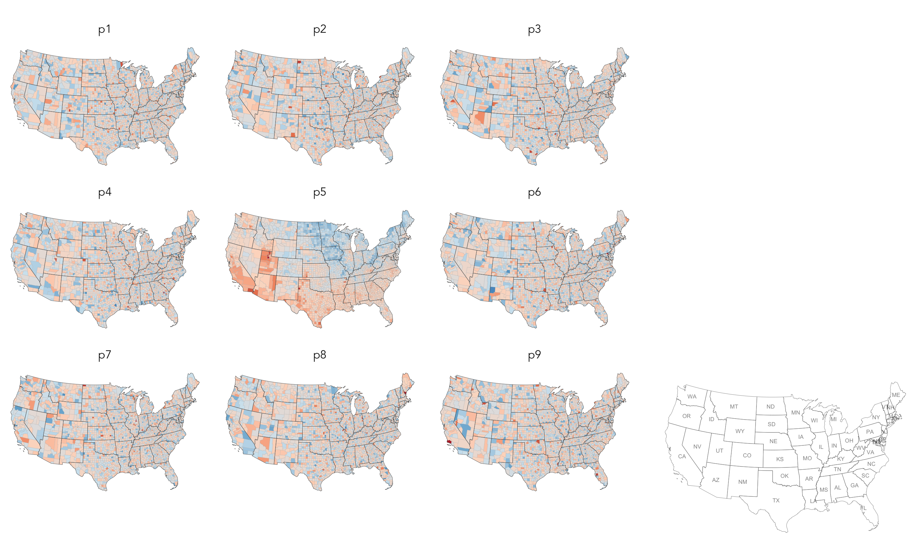
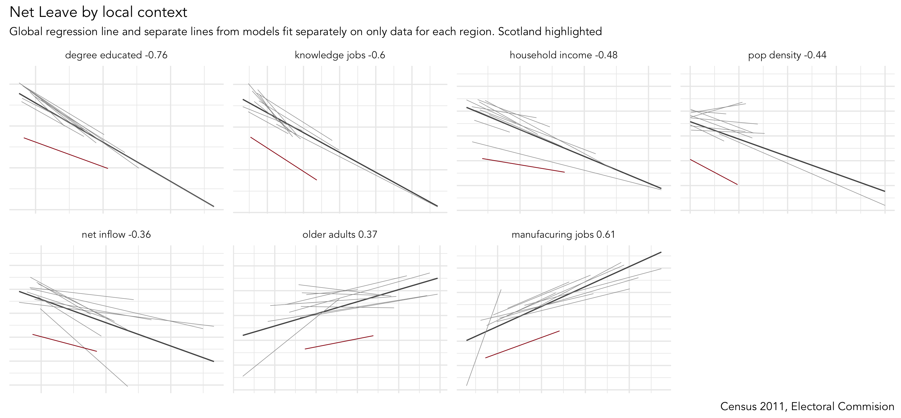
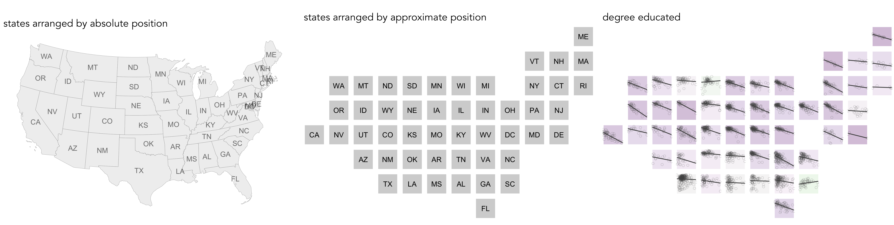

Investigate candidate 'explanations' behind area-level vote
Task 1. Association between Trump and Brexit and levels of (degree) education
We finished the previous session by plotting maps of area-level voting behaviour and of area-level demographics. Visually scanning across the maps, you might have observed that area-level variation in the vote co-varies with demographic characteristics. Any systematic co-variation would be interesting given the popular discourse on the Trump and Brexit vote — that they’re symptomatic of people and places structurally left behind by economic change.
Create a scatterplot of degree-educated on the outcome

|
A much-cited, but nevertheless compelling, argument for the use of visualization in data analysis — Anscombe’s quartet — make great use of the scatterplot. For a fun take on this, see this CHI paper. You can reproduce plots of your own in R using the datasauRus package. |
The association between demographics and the voter outcome variables can be analysed more directly through correlation analysis. You will have learnt that the correlation coefficient (r.) summarises the strength of linear association between two variables. It is a quantity that ranges from perfect negative correlation (-1) to perfect positive correlation (+1) and can be considered a measure of effect size to the extent that it describes how much of something (correlation in this case) exists.
The code below allows our outcome variables and demographic characteristics to be examined using this quantity as well as visually through a scatterplot.
# Calculate correlation coefficient of net_trump by degree-educated.
trump %>%
summarise(r=cor(net_trump, degree_educated)) %>%
pull(r)
# Generate scatterplot of net_trump by degree-educated. Draw OLS regression line.
trump %>%
ggplot(aes(x=net_trump, y=degree_educated))+
geom_point(colour="#525252",pch=21, alpha=0.5)+
geom_smooth(method = "lm", se = FALSE, colour="#525252")Inspect residuals from linear model for quantifying effect of degree-educated on the outcome
There appears to be a reasonably strong negative linear association between the Trump and Leave outcome variabls and the proportion of residents in counties and LADs educated to degree-level and above. This strength of association is greatest for the Brexit data (r. -0.76) and for the US, degree-educated is more heavily associated with shift_trump than net_trump (r. -0.56 vs. r. -0.46). We can model for this relationship and talk about the effect of degree-educated on the our outcome variables using linear regression.
We have already generated a line representing this linear model with the command: geom_smooth(method = "lm", se = FALSE). We can also generate an object storing model parameters and functions with the lm() command.
# Generate a univariate linear model object regressing net_trump on the
# degree-educated variable. Store object with name "lm_trumpshift_degrees".
lm_trumpshift_degrees <- lm(shift_trump ~ degree_educated, data=trump)
summary(lm_trumpshift_degrees)
# Call:
# lm(formula = shift_trump ~ degree_educated, data = trump)
#
# Residuals:
# Min 1Q Median 3Q Max
# -0.200727 -0.031906 -0.002687 0.030099 0.145821
#
# Coefficients:
# Estimate Std. Error t value Pr(>|t|)
# (Intercept) 0.125315 0.001942 64.52 <2e-16 ***
# degree_educated -0.320837 0.008559 -37.48 <2e-16 ***
# ---
# Signif. codes: 0 ‘***’ 0.001 ‘**’ 0.01 ‘*’ 0.05 ‘.’ 0.1 ‘ ’ 1
#
# Residual standard error: 0.04361 on 3106 degrees of freedom
# Multiple R-squared: 0.3115, Adjusted R-squared: 0.3112
# F-statistic: 1405 on 1 and 3106 DF, p-value: < 2.2e-16The regression coefficients that appear after calls to summary(<model-object>) simply describe the regression line — and the regression line tells us, on average, what the shift_trump vote would be if it were entirely dependent on the proportion of the population educated to degree-level. Since there is a negative association between net_trump and degree-educated, the slope of the regression line is negative. The coefficient for degree-educated (Estimate Std. -0.32) can be interpreted as: a one unit increase in the degree-educated population in a county has the effect of decreasing the shift_trump variable by c.0.32 units.
But how successful is this model? To what extent is variation in shift_trump entirely a function of variation in the proportion of people in counties educated to degree-level? It is possible to quantify how well the model fits the data, and importantly where it fits the data, by calculating residuals. Residuals are simply the difference between an observed value and the value expected by the model. The coefficient of determination (R-squared) is the sum of squared residuals divided by the squared sum of total residuals (or variance). It tells us how much of the variation in the outcome can be accounted for by the model. In this case 31% of variation in the observed shift_trump variable can be explained with variation in the degree-educated variable (see output screen).
Ideally residuals should follow a normal distribution and distribute randomly around the regression line, with no obvious systematic structure. One means of testing for normality is to generate a histogram on the residual variable, as in the block below.
# Extract and store model residuals as a new variable.
trump <- trump %>%
mutate(resids_shift_degrees=as_tibble(resid(lm_trumpshift_degrees))$value)
# Plot histogram of residuals.
trump %>%
ggplot(aes(resids_shift_degrees))+
geom_histogram()
# Scatterplot of observed data coloured by residual.
trump %>%
ggplot(aes(x=degree_educated, y=shift_trump, fill=resids_shift_degrees))+
geom_point(colour="#525252",pch=21, alpha=0.8)+
geom_smooth(method = "lm", se = FALSE, colour="#525252")+
scale_fill_distiller(palette="RdBu", direction=1, name="", limits=c(-0.21,0.21))
# Lineup test for spatial autocorrelation in residuals.
# Create the lineup data.
lineup_data <- trump %>%
select(value=resids_shift_degrees)
lineup_data <- do_lineup(lineup_data, 1)
lineup_data <- lineup_data %>%
select(p1:p9) %>%
gather(key="perm", value="perm_values", -geometry)
# Plot the line-up.
# Using geom_sf and development version of ggplot2.
# Takes up plenty of graphics space so store as an object and write out to .png.
map_lineup <- lineup_data %>%
ggplot()+
geom_sf(aes(fill=perm_values), colour="#bdbdbd", size=0.05)+
coord_sf(crs=st_crs(lineup_data), datum=NA)+
facet_wrap(~perm)+
scale_fill_distiller(palette="RdBu", direction=1, limits=c(-0.21,0.21), guide=FALSE, name="")+
theme(axis.title=element_blank())
# Write out to .png.
ggsave("./map_lineup.png",plot=map_lineup, width=22, height=18, units="cm")
# Using the tmap package.
map_lineup <- lineup_data %>%
tm_shape() +
tm_fill(col="perm_values", style="cont", size=0.2, id="county_name", palette="-RdBu", title="")+
tm_borders(col="#636363", lwd=0.2)+
tm_facets("perm")+
tm_layout(frame=FALSE, legend.show=FALSE)
ggsave("./map_lineup.png",plot=map_lineup, width=22, height=18, units="cm")As can be seen from the histogram, the distribution of residuals is reasonably normal though not entirely symmetrical — some counties contain large negative residuals where we overestimate the shift_trump variable given the levels of degree_education there. The choropleth map, however, suggests a very obvious spatial structuring to the residuals — the univariate model underestimates the extent of trump shift in Northern and Eastern states given those counties' (degree-level) demographics; the corollary is true for counties in Southern and Western states. The 'smoothness' of this spatial pattern is surprising (although there is a strong border around Utah and counties in neighbouring states).
Linear regression assumes no spatial autocorrelation in residuals. That it exists suggests that there is some systematic change or behaviour that we are not capturing adequately in our model. Exploring a richer set of explanatory variables may help address some of the spatial dependency in residuals. However, it is also possible that the explanatory variables organise differently over space, that different processes operate in different locations and that there are geographically-varying interactions between variables.

|
Geographers typically test for spatial autocorrelation using spatial statistics — Moran’s I is a measure of effect size for spatial autocorrelation. They do so by comparing an observed value of Moran’s I against a theoretical distribution that would result under complete spatial randomness (CSR) — in this case, this is the assumption that residuals distribute around counties entirely independent of location. Of course in Figure 2 we perform such a test visually — comparing the observed choropleth against a set of choropleths that one might expect to see under CSR. |
Task 2. Association between Trump and Brexit and other candidate variables

You will by now have noticed that there are several area-level explanatory variables in the Brexit and Trump data frames. These have been carefully selected based on existing literature around the rise of populist voting behaviour. We will make comparisons in associations between our outcome variables and these area-level variables visually, using small multiples — a set of graphics juxtaposed next to one another, ideally in a meaningful order, such that graphics can be compared.
ggplot2 usefully supports small multiples with functions such as facet_wrap() and facet_grid(). A requirement of calls to ggplot2's facet functions is Tidy data — where just one observation appears per row. Rows in the the data frame are then split and a separate chart is created for each tranche of data.
To generate small multiples of the scatterplots in the previous section, we have to collapse our data frame such that a single row is given to each county or LAD and explanatory variable — basically we need to make our data frame taller and thinner. The tidyr package provides methods that allow these types of operations. In the code block below the gather() method is used to collapse multiple columns into rows. Remember you can check the documentation for this function by typing into the R Console ?gather.
Rather than clutter the small multiples with individual points, only the regression lines are shown. This is achieved with a slight hack — we set geom_point() with total transparency (alpha=0). The bold lines in Figure 3 represent the overall regression line and in grey are separate lines for each GB region. The addition of the regional lines allows us to investigate whether the scale and interaction between variables is regionally specific. General heuristics:
-
Parallel slopes with little variation in vertical position (e.g. degree-educated with the obvious exception of Scotland) — variation is not regionally structured and that interactions between variables are generally consistent.
-
Parallel slopes with large variation in vertical position (household_income) — variable’s scale is regionally structured but a consistent association exists.
-
Substantial changes in slope (older_adults?) — regional specificity in the scale of those variables and perhaps the nature of association with the outcome.
# Small multiple plot of associations with _net_leave_ and area-level demographics.
# First gather() variables to include in the plot, so that we can supply variable name to facet_wrap().
# Create a global regression line based on all points (stat_smooth).
# And one contingent on region (group=region_abbr).
brexit %>%
gather(c(degree_educated:pop_density), key = "var", value="value") %>%
ggplot(aes(x=value, y=net_leave))+
geom_point(colour="#525252",pch=21, alpha=0) +
stat_smooth(method=lm, se=FALSE, size=0.5, colour="#525252")+
stat_smooth(aes(group=region_abbr), method=lm, se=FALSE, size=0.2, colour="#969696")+
facet_wrap(~var, scales="free", nrow=3)+
theme(axis.text=element_blank(),
axis.title=element_blank())|
Whilst one form of untidy data is observations distributed amongst columns, the reverse is also common — where observations are duplicated amongst rows. tidyr provides a helper function ( |
Task 3. Interrogate into regionally-varying association

Hopefully from the analysis above you have developed some insight into associations between the Trump and Brexit outcome variables and area-level demographics. Augmenting our plots with local regression lines provides useful additional information. Firstly, it is very likely that the scale of variables might be different in different parts of the country — a density plot of small multiples (faceted on state) shows that income distributions tend to be higher and wider in the counties of New England than those in Southern Central US. Such distinctions are important: a consistent pattern of interactions between demographics and voting behaviour might exist, but these interactions can be hidden in global models that do not allow for local context – that assume each each US county and GB LAD results from the same population and process. Secondly, it is also possible that very different processes are operating between these two regions – that the extent and even direction of association between income and voting preference may vary for these different parts of the US.
There are techniques that can be used to account for this — for examlpe, I’ve recently published a paper (Beecham et al., in press) applying multi-level modelling and geographically-weighted statistics on the Brexit dataset. Both of these approaches (multi-level modelling and geographical weighted statistics) result in some form of local parameter estimates — and we’ve already generated local estimates in Figure 3 with the addition of regionally-varying regression lines above. An important analytic task remains: to characterise spatial patterns in these locally-varying estimates. I’d argue that this is a task that visualization uniquely supports.
So our final activity is to explore how the differing associations between the outcome variables and area-level demographics implied by the plots above vary over space. We will do so by generating spatially arranged small multiples: separate plots describing associations in each US state and GB region, but with plots arranged according to their approximate spatial position. You will notice in the code block below that to affect such an arrangement requires only a minimal modification to the ggplot2 specification: facet_grid(x~y) — where x,y describes the approximate position of each state/region.
# Faceted scatterplot of degree_educated on net_trump arranged according to approximate spatial position.
trump %>%
ggplot()+
geom_point(aes(x=degree_educated, y=net_trump), colour="#525252",pch=21, alpha=0.2)+
stat_smooth(aes(x=degree_educated, y=net_trump), method=lm, se=FALSE, size=0.6, colour="#525252")+
facet_grid(gridY~gridX, shrink=FALSE, scales = "free_x")
# I have encapsulated a more detailed specification into a function in a separate R script.
# Load into R session.
source(paste0(session_url, "./src/build_scatter_region.R"))
# Generate a tibble without geometry list-col (there's a boring reason for this).
trump_ungeom <- trump
st_geometry(trump_ungeom) <- NULL
# Call build_scatter_region() function to ggplot2 object.
build_region_scatter(trump_ungeom, quo(degree_educated), quo(net_trump), quo(state_abbr))|
There is an established literature in information visualization on how to effect semi-spatial arrangements. For an overview and interesting and elegant approach, see Meulemans et al. (2017). You might have noticed a strange function ( |
References
-
Beecham, R. et al. (in press) Locally-varying explanations behind the United Kingdom’s vote to leave the United Kingdom. Journal of Spatial Information Science.
-
Meulemans, W. et al. (2017) Small multiples with gaps. IEEE Transactions on Visualization & Computer Graphics, 23(1):381–390. Code and web-interface is available at the paper website.
Content by Roger Beecham | 2018 | Licensed under Creative Commons BY 4.0.